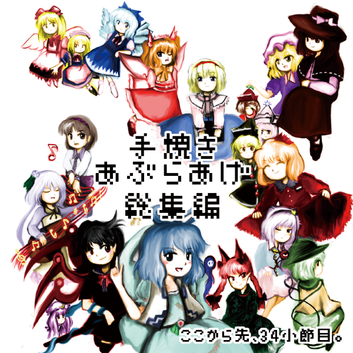

2015/12/30 水曜 西へ10b
「電磁誘導」で発表のアクションパズルゲーム、
「カラクリ輝針城」（300円）にBGM担当として参加してます。
なんか正邪が重力反転して天井を歩いたり、針妙丸が正邪を大きくしてその上に乗っかったりします。
2人ともゴールに着いたらステージクリアという簡単なゲームです。

なんと12月28日現在誠意製作中です。ほんとに完成するのかな？
こっそりデバッグにも協力してます。
ってかなんでそもそもサークル「電磁誘導」のホームページが無いんじゃ（半ギレ）
そんなわけで委託頒布はしない気がします。暇な人はぜひとも会場へ。
―データ不備のお詫び―
この度は「非統一宇宙探訪 〜 the 23rd Century Maidens.」をご視聴頂き、誠にありがとうございます。
大変申し訳ありませんが、このCDのtrack7「神秘の密林」はデータ不備により曲が途中で終了してしまい、
正しく収録できていないという不具合が発生しております。
加えて、track10の音量調節が甘く、想定したものとは違ってしまいました。
そのため、視聴の際はtrack7およびtrack10を飛ばして頂いて、
修正データを下記URLよりダウンロードして視聴して頂きたいと思います。
(無料公開させて頂きます。サンプルとしてご利用下さい。)
track7「神秘の密林」MP3データ（直リンク）
track10「Beyond Dream 〜 夢は時空を越えて」MP3データ（直リンク）
皆様にはお手数とご迷惑をお掛け致します。誠に申し訳ございませんでした。
2015/5/15 追記
現在、CDの中身を正しいものに差し替えた修正版をプレスしてもらっています。
上海アリス幻樂団の新作はまさかのゆめちゆCD！？嘘ですすいません
2015/5/10(日)に行われる、第十二回博麗神社例大祭（例大祭12） にて、
秘封倶楽部＆東方旧作風アレンジCDを頒布しました。
とらのあな通販ページはこちら
https://www.toranoana.jp/mailorder/article/04/0030/30/25/040030302558.html?rec=genre
現在、げんましん通、台湾例大祭で頒布を予定しております。
秋季例大祭でも頒布するかも？
無事頒布いたしました。ご来場の皆様ありがとうございます。
在庫は地味にまだありますので今後のイベントでもちょくちょく頒布する予定です。
「非統一宇宙探訪 〜 the 23rd Century Maidens.」
1000円で頒布。例大祭12 お09b「ここから先、34小節目。」
今回のCDはリボさん（リボざいむ)による16ページのストーリーブックつき！
東方旧作の秘封倶楽部こと（ホントか？）、岡崎夢美と北白河ちゆりが宇宙に冒険に行くお話です。
ブックレット・ジャケットのデザインはいつもどおりのりろーさん、
収録曲の4曲はHAMRIKUさん（サークルワンタン）に担当して頂きました。ありがとうございます！
| 非統一宇宙探訪 〜 the 23rd Century Maidens. | |
| 1. 未知の花 魅知の旅 | 原曲：未知の花 魅知の旅より「未知の花 魅知の旅」 Composed by ZUN / Arranged by あぶらあげ |
| 2. 夜の海に沈む月 | 東方風オリジナル曲 Composed by HAMRIKU |
| 3. 可能性空間移動船 | 東方風オリジナル曲 Composed by HAMRIKU |
| 4. G Free | 原曲：大空魔術より「G Free」 Composed by ZUN / Arranged by あぶらあげ |
| 5. Desync | 東方風オリジナル曲 Composed by あぶらあげ |
| 6. 夜空のユーフォーロマンス | 原曲：鳥船遺跡より「夜空のユーフォーロマンス」 Composed by ZUN / Arranged by あぶらあげ |
| 7. 神秘の密林 | 原曲：鳥船遺跡より「衛星トリフネ」 Composed by ZUN / Arranged by HAMRIKU |
| 8. 23世紀の秘封倶楽部 | 夢美・ちゆりのテーマ オリジナル＋東方夢時空より「Sailor of Time」「Strawberry Crisis!!」 Composed by ZUN / Arranged by あぶらあげ |
| 9. 空に浮かぶ物体X | 原曲：東方非想天則より「空に浮かぶ物体X」 「アンノウンX 〜 Unfound Adventure」 Composed by ZUN / Arranged by HAMRIKU |
| 10. Beyond Dream 〜 夢は時空を越えて | 原曲：東方夢時空より「夢は時空を越えて」「時の風」 Composed by ZUN / Arranged by あぶらあげ |
こちらのCDはい33ab「外柿山」のスペースでも委託させて頂く予定です。
また、個人的に参加しました合同CD「Young Leaves」(500円,新譜)、「Extra
Attack!!」(500円,旧譜)も委託頒布させて頂く予定です。
旧譜の「幺樂紀行」（1000円）、「手焼きあぶらあげ総集編」（300円）もいくつか持っていきます。
5/10の例大祭12、お09b「ここから先、34小節目。」スペースでお待ちしております。
社務所スペース（事故スペース）と合体サークルしております。なにとぞ。
C86当選いたしました。2日目（2014/8/16,土曜日）、ピ-04b「ここから先、34小節目。」にて新譜を出します。

ジャケット絵などはのりろーさんに描いていただきました。ありがとうございます！
「幺樂紀行 〜 Mystic Untouched Area.」
道中曲を原曲とした旧作風アレンジに、道中曲風の東方風自作曲。
ゲストにサークルワンタンの HAMRIKU 氏をお呼びし、
東方旧作風の世界がより広がったCDとなっております。
1000円 で頒布の予定です。
8/16(土) コミックマーケット86 2日目
ピ-04b 「ここから先、34小節目。」
にてお待ちしております。
| 幺樂紀行 〜 Mystic Untouched Area. | |
| 1. 遠野幻想物語 | 原曲：東方妖々夢より「遠野幻想物語」 Composed by ZUN / Arranged by あぶらあげ |
| 2. 死霊の夜桜 | 原曲：東方神霊廟より「死霊の夜桜」 Composed by ZUN / Arranged by HAMRIKU(guest) |
| 3. Lazy Rain | 東方風オリジナル曲 Composed by あぶらあげ |
| 4. 愉しげな星空、未知との遭遇 | 東方風オリジナル曲 Composed by HAMRIKU(guest) |
| 5. Romantic Children | 原曲：幺樂団の歴史2より「Romantic Children」 Composed by ZUN / Arranged by あぶらあげ |
| 6. 車椅子の未来宇宙 | 原曲：大空魔術より「車椅子の未来宇宙」 Composed by ZUN / Arranged by HAMRIKU(guest) |
| 7. 博麗 〜 Eastern Wind | 原曲：東方封魔録より「博麗 〜 Eastern Wind」(MIDI) Composed by ZUN / Arranged by あぶらあげ |
| 8. 歪の幻想郷 | 東方風オリジナル曲 Composed by HAMRIKU(guest) |
| 9. 上海紅茶館 〜 Chinese Tea | 原曲：夢違科学世紀より「上海紅茶館 〜 Chinese Tea」 Composed by ZUN / Arranged by あぶらあげ |
| 10. アリスマエステラ | 原曲：東方幻想的音楽より「アリスマエステラ」 Composed by ZUN / Arranged by あぶらあげ |
同時に、下にあります「手焼きあぶらあげCD」も再頒布致します。
また、「外柿山」（とがきさん）の権太夫さんのCDも委託という形で頒布させていただきます。
こちらも素晴らしい東方アレンジを制作されてるので、宜しければ聴いてみてはいかがでしょうか。
今までこっそり手渡しで配ってきた「手焼きあぶらあげCD」の総集編です。

絵はのりろーさんに描いていただきました。ありがとうございます！
「手焼きあぶらあげ総集編」
頒布価格：300円
2014/5/11(日) 博麗神社例大祭11
い04a 「ここから先、34小節目。」
にて頒布致しました。
| 手焼きあぶらあげ総集編 | |
| 1. PSEUDO STRANGE GAME | 原曲：かわいい悪魔 〜 Innocence, メイド幻想 〜 Icemilk Magic |
| 2. CIRNO CORE | 原曲：おてんば恋娘の冒険 |
| 3. GBソフト「○ラゴンクエスト ○ンスターズ サニーのワンダーランド」より | 原曲：サニーミルクの紅霧異変 |
| 4. 「ブクレシュティの人形師」 旧作アレンジ | |
| 5. 16bitの幽霊樂団 | 原曲：幽霊楽団 〜 Phantom Ensemble |
| 6. 大空魔術FMメドレー | 原曲：G Free, 車椅子の未来宇宙 など |
| 7. 紅葉 -MOMIJI- | 原曲：人恋し神様 〜 Romantic Fall |
| 8. FCソフト「サトリス」より「コロブチカ・トロイカ」 | 原曲：少女さとり 〜 3rd eye, 無間の鐘 〜 Infinite Nightmare |
| 9. FCソフト「サトリス」より「テクノサトリス」 | 原曲：妖怪裏参道, 魔法少女達の百年祭 |
| 10. 旧灼熱地獄地下水道 | 原曲：廃獄ララバイ |
| 11. 古きユアンシェン 〜Ancient Hermit | 原曲：古きユアンシェン |
| 12. 幻想浄瑠璃 -東方旧作風 Remix- 「不思議の大冒険 チルノ見参！２＋１」収録 |
原曲：幻想浄瑠璃 |
| 13. 「感情の摩天楼 〜 Cosmic Mind」旧作アレンジ | |
| ？？？ | こちらのゲームのBGMです。 |
ちなみにおとなりのサークル「外柿山」（とがきさん）と合体スペースで出します。
こちらも素晴らしい東方アレンジを制作されてるので、宜しければ聴いてみてはいかがでしょうか。
これらの作品は 上海アリス幻樂団 による「東方project」の二次創作です。
原作者である ZUN 様 および 上海アリス幻樂団 様 と直接の関係はございません。